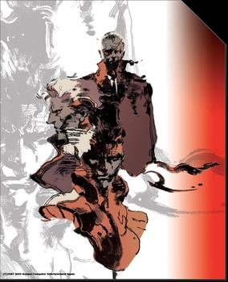
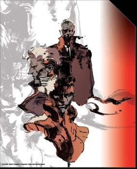

Metal Gear Solid 3: Snake Eater, which is chronologically the first game in the series, introduces a younger version of Big Boss when he was under the codename Snake during the Cold War.[47] The game focuses on the rise of Naked Snake from apprentice to legendary soldier as well as the downfall of his mentor and matriarchal figure, The Boss. After The Boss defects to the Soviet Union, Snake is sent into Russia to kill The Boss and end the threat posed by Yevgeny Borisovitch Volgin, a GRU colonel with plans to overthrow the Soviet government. The origins of the Patriots are also explored in the game.
 The next title, Metal Gear Solid: Peace Walker, is set ten years after the events of Snake Eater and returns to the story of the young Big Boss. Now the head of the mercenary corporation MSF (Militaires Sans Frontières), Big Boss discovers that nuclear warheads are being transported to Latin America and decides that he must put a stop to that. Peace Walker features an entirely new cast of characters to provide both aid and intel for Big Boss. A few characters from later games, such as a younger Miller, make appearances in the game.
The next title, Metal Gear Solid: Peace Walker, is set ten years after the events of Snake Eater and returns to the story of the young Big Boss. Now the head of the mercenary corporation MSF (Militaires Sans Frontières), Big Boss discovers that nuclear warheads are being transported to Latin America and decides that he must put a stop to that. Peace Walker features an entirely new cast of characters to provide both aid and intel for Big Boss. A few characters from later games, such as a younger Miller, make appearances in the game.
The next title, Metal Gear Solid: Peace Walker, is set ten years after the events of Snake Eater and returns to the story of the young Big Boss. Now the head of the mercenary corporation MSF (Militaires Sans Frontières), Big Boss discovers that nuclear warheads are being transported to Latin America and decides that he must put a stop to that. Peace Walker features an entirely new cast of characters to provide both aid and intel for Big Boss. A few characters from later games, such as a younger Miller, make appearances in the game.
Metal Gear Solid V: The Phantom Pain, serves as the direct sequel to Peace Walker and is composed of two chapters similar to the Tanker and Plant chapters in Sons of Liberty. The prologue, Ground Zeroes, is set a few weeks after the final mission in Peace Walker, as Big Boss is tasked with rescuing two VIPs from a US military black site on the coast of Cuba. Big Boss' mission coincides with a visit to Mother Base by the IAEA, which turns out to be a cover for an attack on Mother Base orchestrated by the mysterious organization XOF. In the chaos, Big Boss' helicopter collides with another, and he then falls into a coma for nine years, which leads to the events of the main chapter, The Phantom Pain. The basis of the main story revolves around Big Boss forming a new private military company, the "Diamond Dogs", to retaliate for the destruction of MSF and the loss of his comrades. However, this "Big Boss" is revealed to be in fact be a body double, who was brainwashed to believe himself to be the real Big Boss, while the real Big Boss went into hiding to create Outer Heaven.
A third Snake brother known as Solidus Snake is introduced as the United States President at the end of Metal Gear Solid and serves as the main antagonist of Metal Gear Solid 2: Sons of Liberty. During his time as President, Solidus became aware of a secretive cabal known as "The Patriots" who were steadily manipulating the course of human history. After his tenure as President is over, Solidus takes control of the "Big Shell" offshore facility, which is being used to develop Arsenal Gear, a mobile undersea fortress designed to house and protect a network of artificial intelligences created to influence human development by filtering the availability of information across the Internet. The game is set four years after Liquid's death in Metal Gear Solid, and it puts the player in control of Raiden, a soldier who fights against Solidus, who is revealed to be his former commander during his term as a child soldier.[49] Raiden joins forces with Snake and later learns that they are all being manipulated by Revolver Ocelot, who has been working for the Patriots. At the end of the game, Ocelot seemingly becomes possessed by Liquid Snake as the nanomachines from Liquid Snake's arm (Which Ocelot took to replace his own arm after Grey Fox slices it off in Metal Gear Solid) work their way into Ocelot's thought process.

A third Snake brother known as Solidus Snake is introduced as the United States President at the end of Metal Gear Solid and serves as the main antagonist of Metal Gear Solid 2: Sons of Liberty. During his time as President, Solidus became aware of a secretive cabal known as "The Patriots" who were steadily manipulating the course of human history. After his tenure as President is over, Solidus takes control of the "Big Shell" offshore facility, which is being used to develop Arsenal Gear, a mobile undersea fortress designed to house and protect a network of artificial intelligences created to influence human development by filtering the availability of information across the Internet. The game is set four years after Liquid's death in Metal Gear Solid, and it puts the player in control of Raiden, a soldier who fights against Solidus, who is revealed to be his former commander during his term as a child soldier.[49] Raiden joins forces with Snake and later learns that they are all being manipulated by Revolver Ocelot, who has been working for the Patriots. At the end of the game, Ocelot seemingly becomes possessed by Liquid Snake as the nanomachines from Liquid Snake's arm (Which Ocelot took to replace his own arm after Grey Fox slices it off in Metal Gear Solid) work their way into Ocelot's thought process.

Metal Gear Solid elaborates on the storyline of the earlier games and reveals that Solid Snake is a genetic clone of Big Boss, created as part of a secret government project. A new antagonist is introduced in the form of Liquid Snake, Snake's twin brother who takes control of FOXHOUND after Snake's retirement. Liquid and FOXHOUND take control of a nuclear weapons disposal facility in Alaska and commandeer REX, the next-generation Metal Gear weapons platform being tested there. They threaten to detonate REX's warhead unless the government turns over the remains of Big Boss. Solid Snake destroys Metal Gear REX and kills each of the renegade FOXHOUND members with the exception of Revolver Ocelot.
Metal Gear Solid 4: Guns of the Patriots deals with a rapidly aging Solid Snake (now branded Old Snake) who is still on his quest to find and defeat Revolver Ocelot, now known as Liquid Ocelot. Despite the destruction of the Arsenal Gear in Sons of Liberty, the Patriots have continued in their plans to influence the course of human history, installing artificial intelligence systems around the world. Ocelot, opposed to this, has assembled armies with which to fight back and intends to hijack their entire operating system for his own ends. Solid Snake's objective later changes to destroying the artificial intelligences of the Patriots and stop their oppression. After he and his allies succeed, Snake decides to live out his life peacefully.
Metal Gear Solid 4: Guns of the Patriots deals with a rapidly aging Solid Snake (now branded Old Snake) who is still on his quest to find and defeat Revolver Ocelot, now known as Liquid Ocelot. Despite the destruction of the Arsenal Gear in Sons of Liberty, the Patriots have continued in their plans to influence the course of human history, installing artificial intelligence systems around the world. Ocelot, opposed to this, has assembled armies with which to fight back and intends to hijack their entire operating system for his own ends. Solid Snake's objective later changes to destroying the artificial intelligences of the Patriots and stop their oppression. After he and his allies succeed, Snake decides to live out his life peacefully.